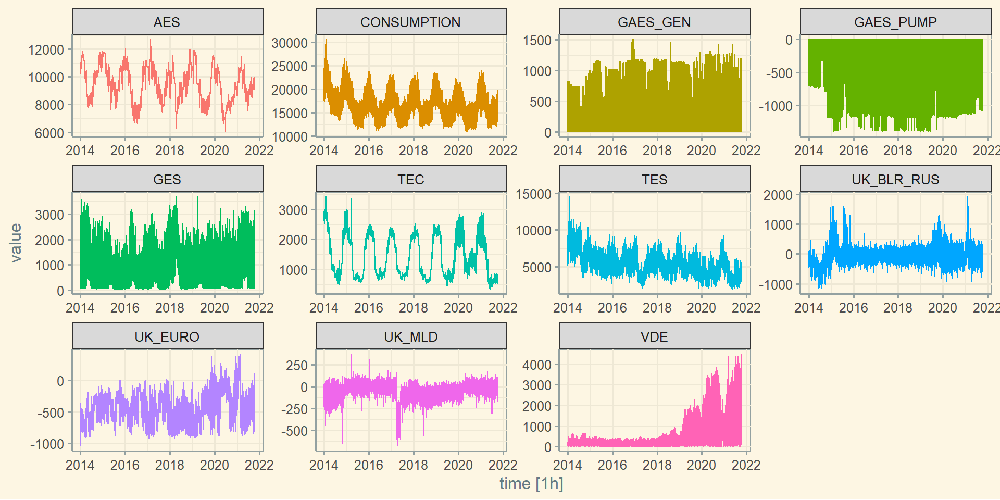
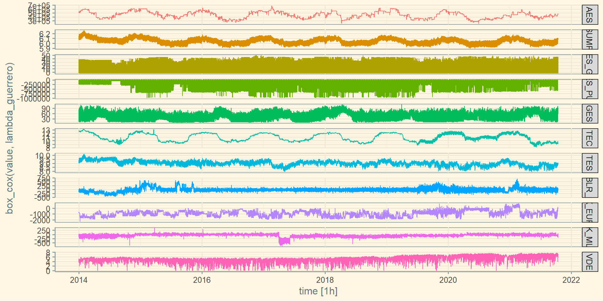
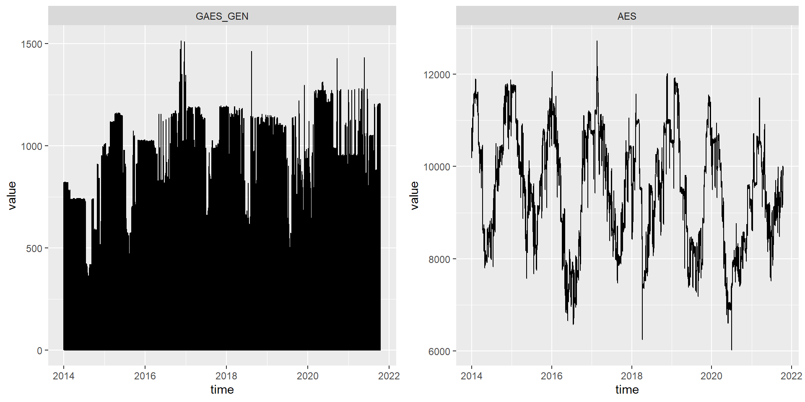
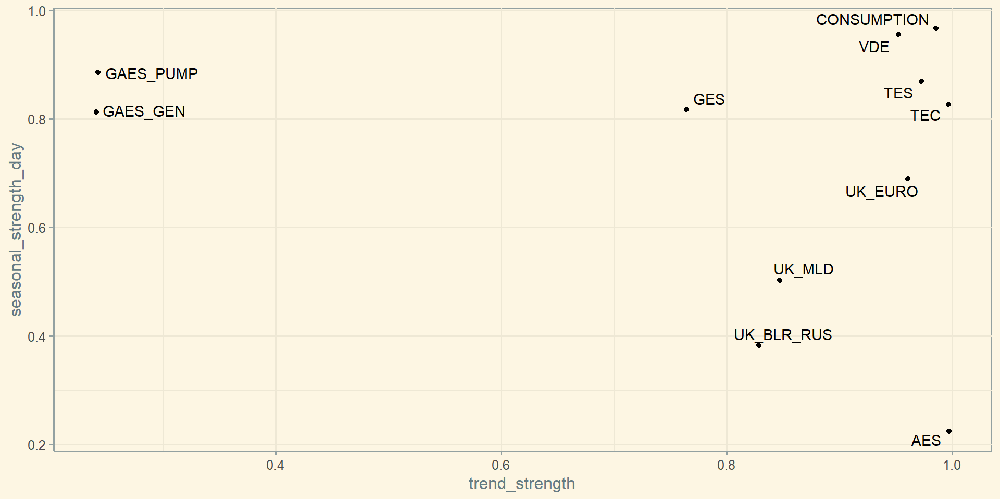

05 - Ознаки часових рядів
Прогнозування часових рядів
Ігор Мірошниченко
КНЕУ::ІІТЕ
оновлено: 2022-10-12
Пакет feasts
Приклади features
Нам вже відомі декілька “фічей” (від анг. “features”) часових рядів:
Автокорреляція
\(\lambda\) Бокса-Кокса
Але на цьому не зупиняємось і в подальшому з витягуванням “фічей” допоможе пакет feasts (FEatures And Statistics from Time Series).
Приклад: споживання електроенергії в України
energy <- vroom("https://raw.githubusercontent.com/Aranaur/datasets/main/datasets/alt_energy_ua/2014_2021_all_system.csv") %>%
pivot_longer(!time, names_to = "type", values_to = "value") %>%
mutate(time = ymd_hms(time)) %>%
as_tsibble(index = time, key = type)
energy# A tsibble: 750,541 x 3 [1h] <UTC>
# Key: type [11]
time type value
<dttm> <chr> <dbl>
1 2014-01-01 00:00:00 AES 10728
2 2014-01-01 01:00:00 AES 10606
3 2014-01-01 02:00:00 AES 10515
4 2014-01-01 03:00:00 AES 10475
5 2014-01-01 04:00:00 AES 10427
6 2014-01-01 05:00:00 AES 10473
7 2014-01-01 06:00:00 AES 10469
8 2014-01-01 07:00:00 AES 10493
9 2014-01-01 08:00:00 AES 10479
10 2014-01-01 09:00:00 AES 10455
# … with 750,531 more rowsПриклад: споживання електроенергії в України
Розрахунок простих статистик
Розрахунок простих статистик
my_func <- function(x) {
m <- mean(x, na.rm = TRUE)
v <- var(x, na.rm = TRUE)
return(c(avg = m, var = v))}
energy %>%
features(value, list(~ my_func(.)))# A tibble: 11 × 3
type avg var
<chr> <dbl> <dbl>
1 AES 9531. 1581820.
2 CONSUMPTION 17017. 8349158.
3 GAES_GEN 161. 73761.
4 GAES_PUMP -219. 151638.
5 GES 857. 409665.
6 TEC 1448. 478352.
7 TES 5478. 2823452.
8 UK_BLR_RUS -21.1 71330.
9 UK_EURO -450. 51452.
10 UK_MLD -52.3 7203.
11 VDE 399. 350597.Розрахунок простих статистик
# A tibble: 11 × 6
type `0%` `25%` `50%` `75%` `100%`
<chr> <dbl> <dbl> <dbl> <dbl> <dbl>
1 AES 6014 8519 9583 10551 12724
2 CONSUMPTION 10905 15042 16549 19009 30727
3 GAES_GEN 0 0 0 321 1513
4 GAES_PUMP -1400 -393 0 0 0
5 GES 40 332 723 1258 3695
6 TEC 340 804 1237 2108 3428
7 TES 1935 4279 5300 6481 14575
8 UK_BLR_RUS -1185 -125 -36 52 1928
9 UK_EURO -1049 -617 -461 -297 421
10 UK_MLD -687 -92 -38 3 377
11 VDE -1 90 200 388 4495Вбудовані функції feasts
Коефіціент Херста coef_hurst
«Показник Херста», «Індекс Херста» або «Коефіцієнт Херста» використовується як міра довготривалої пам’яті часових рядів. Це пов’язано з автокореляціями часового ряду та швидкістю, з якою вони зменшуються, коли відставання між парами значень збільшується.
Інтерпретація:
\(H=0.5\), часовий ряд має характеристики білого шуму, тобто незалежного, випадкового процесу.
\(0 \leq H <0.5\), антіперсистентність, тобто часовий ряд змінює напрямок частіше, ніж ряд випадкових незалежних величин.
\(0.5 < H \leq 1\), часовий ряж характеризується ефектом довготривалої пам’яті і має схильність наслідувати тренд
Коефіціент Херста
Показник feat_acf
- перший коефіцієнт автокореляції з вихідних даних;
- сума квадратів перших десяти коефіцієнтів автокореляції з вихідних даних;
- перший коефіцієнт автокореляції з диференційованих рядів;
- сума квадратів перших десяти коефіцієнтів автокореляції з диференційованих рядів;
- перший коефіцієнт автокореляції з подвійно диференційованих рядів;
- сума квадратів перших десяти коефіцієнтів автокореляції з подвійно диференційованих рядів;
- Для сезонних даних також повертається коефіцієнт автокореляції на першому сезонному лазі
Показник feat_acf
# A tibble: 11 × 8
type acf1 acf10 diff1_acf1 diff1_acf10 diff2_acf1 diff2_acf10 seaso…¹
<chr> <dbl> <dbl> <dbl> <dbl> <dbl> <dbl> <dbl>
1 AES 0.999 9.90 0.0884 0.0131 -0.486 0.236 0.979
2 CONSUMPTION 0.978 5.20 0.699 1.18 -0.00739 0.0665 0.966
3 GAES_GEN 0.726 0.790 0.135 0.118 -0.331 0.134 0.760
4 GAES_PUMP 0.823 1.47 0.201 0.195 -0.419 0.195 0.866
5 GES 0.866 2.02 0.0798 0.0516 -0.441 0.198 0.837
6 TEC 0.997 9.62 0.163 0.120 -0.416 0.211 0.989
7 TES 0.983 6.89 0.391 0.412 -0.374 0.151 0.915
8 UK_BLR_RUS 0.784 5.46 -0.496 0.249 -0.681 0.508 0.753
9 UK_EURO 0.981 7.74 0.201 0.120 -0.416 0.177 0.867
10 UK_MLD 0.855 5.26 -0.309 0.102 -0.598 0.365 0.805
11 VDE 0.967 3.30 0.741 1.38 -0.0281 0.0742 0.939
# … with abbreviated variable name ¹season_acf1Показник guerrero
Розрахунок \(\lambda\) Бокса-Кокса за методом Герреро
Показник guerrero
Функція features()**На даний момент пакетfeastsдозволяє розрахувати 48 ознак, що характеризують різні властивості часових рядів. Для одночасного розрахунку всіх цих ознак можна застосувати функціюfeature_set()з пакетаfabletools` таким чином:
# A tibble: 11 × 49
type trend…¹ seaso…² seaso…³ seaso…⁴ spiki…⁵ linea…⁶ curva…⁷ stl_e…⁸ stl_e…⁹
<chr> <dbl> <dbl> <dbl> <dbl> <dbl> <dbl> <dbl> <dbl> <dbl>
1 AES 0.997 0.224 22 2 6.55e-2 -7.93e4 5926. 0.830 1.56
2 CONS… 0.986 0.967 18 4 5.99e+0 -2.01e5 137924. 0.851 1.62
3 GAES… 0.241 0.813 18 16 1.88e-1 1.94e3 -5231. 0.461 0.381
4 GAES… 0.243 0.886 20 3 6.12e-1 -2.63e3 7300. 0.441 0.371
5 GES 0.764 0.817 19 4 1.57e+0 5.53e3 -1101. 0.533 0.567
6 TEC 0.997 0.827 20 1 1.32e-2 -2.01e4 6215. 0.702 0.879
7 TES 0.972 0.869 19 4 2.37e+0 -2.35e5 72803. 0.755 1.11
8 UK_B… 0.829 0.382 15 3 1.30e-1 7.55e3 -10117. 0.0413 0.0222
9 UK_E… 0.961 0.690 7 3 5.01e-3 1.53e4 5628. 0.746 1.09
10 UK_M… 0.847 0.502 3 21 8.83e-4 2.43e2 4929. 0.252 0.137
11 VDE 0.953 0.956 13 22 2.11e-1 7.92e4 47975. 0.808 1.48
# … with 39 more variables: acf1 <dbl>, acf10 <dbl>, diff1_acf1 <dbl>,
# diff1_acf10 <dbl>, diff2_acf1 <dbl>, diff2_acf10 <dbl>, season_acf1 <dbl>,
# pacf5 <dbl>, diff1_pacf5 <dbl>, diff2_pacf5 <dbl>, season_pacf <dbl>,
# zero_run_mean <dbl>, nonzero_squared_cv <dbl>, zero_start_prop <dbl>,
# zero_end_prop <dbl>, lambda_guerrero <dbl>, kpss_stat <dbl>,
# kpss_pvalue <dbl>, pp_stat <dbl>, pp_pvalue <dbl>, ndiffs <int>,
# nsdiffs <int>, bp_stat <dbl>, bp_pvalue <dbl>, lb_stat <dbl>, …Загальний опис показників
Загальний перелік
feat_acf(): набір показників, які розраховані на основі коефіцієнтів автокореляціїfeat_pacf(): набір показників, які розраховані на основі коефіцієнтів автокореляції та часткової автокореляціїguerrero(): оптимальне значення параметру \(\lambda\) для перетворення Бокса-Коксаcoef_hurst(): коефіцієнт Херстаn_crossing_points(): кількість разів, коли часовий ряд перетинає власну медіануn_flat_spots(): максимальна довжина часового ряду, в межах якої спостереження мають однакові значенняfeat_stl(): показники, які розраховані за допомогою компонент часового рядуfeat_intermittent(): показники, які відображають наявність і структуру відрізків, в межах котрих всі значення ряду дорівнюють нулю.var_tiled_var(): дисперсія дисперсій, розрахованих по вікнам спостереженням, які не перетинають один одногоbox_pierce(): тест Бокса-Пірса на наявність автокореляціїljung_box(): тест Льюнга-Бокса на наявність автокореляціїn_flat_spots(): максимальна довжина часового ряду в межах якого значення ряду належать до одного з децилей.shift_level_max(): максимальний зсув середнього рівняshift_var_max(): максимальний зсув дисперсіїshift_kl_max(): максимальний зсув відстані Кульбака–Лейблераunitroot_nsdiffs(): мінімальна кількість диференціювань ряду, необхідних для досягнення стаціонарності.feat_spectral(): спектральна ентропія рядуunitroot_kpss(): тест на одиничний коріньstat_arch_lm(): тест ARCH Енгла
Приклади
Ряди з мінімальним та максимальним трендом
library(ggplot2, gridExtra)
energy_trend <- energy %>%
features(., value, feature_set(tags = "stl"))
min_trend <- energy_trend %>%
filter(trend_strength == min(trend_strength)) %>%
dplyr::select(type) %>%
left_join(., energy, by = "type") %>%
ggplot(., aes(time, value)) +
geom_line() + facet_grid(~type)
max_trend <- energy_trend %>%
filter(trend_strength == max(trend_strength)) %>%
dplyr::select(type) %>%
left_join(., energy, by = "type") %>%
ggplot(., aes(time, value)) +
geom_line() + facet_grid(~type)Ряди з мінімальним та максимальним трендом
Ряди з незвичайним поєднанням ознак
Дякую за увагу!
ihor.miroshnychenko@kneu.ua